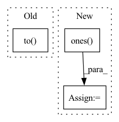

Pattern ID :19309

Before Change
def forward(self, input, time, device):
batch_size, time_step, feature_dim = input.size()
c_out = torch.zeros(batch_size, self.hidden_dim).to(device)
h_out = torch.zeros(batch_size, self.hidden_dim).to(device)
tmp_h = (
torch.zeros_like(h_out, dtype=torch.float32)
.view(-1)
After Change
def forward(self, input):
batch_size, time_step, feature_dim = input.size()
time = torch.ones(batch_size, time_step)
c_out = torch.zeros(batch_size, self.hidden_dim)
h_out = torch.zeros(batch_size, self.hidden_dim)
tmp_h = (
In pattern: SUPERPATTERN
Frequency: 5
Non-data size: 3
Instances
Fragment ID: 62892366
Project Name: yhzhu99/covid-ehr-benchmarks
Commit Name: ec1a0db052e3e5b9c240f29377d0c68c50d34cbf
Time: 2022-06-24
Author: yhzhu99@gmail.com
File Name: app/models/backbones/stagenet.py
M Class Name: StageNet
N Class Name: StageNet
M Method Name: forward(2)
N Method Name: forward(4)
M Parent Class: nn.Module
N Parent Class: nn.Module
M File Name: app/models/backbones/stagenet.py
N File Name: app/models/backbones/stagenet.py
M Start Line: 104
M End Line: 161
N Start Line: 106
N End Line: 162
'>
Before Change
loss = criterion(pos_inner_data, neg_inner_data).item()
pos_loss = - np.log(sigmoid(
pos_inner_data.to("cpu").detach().numpy()
)).sum()
neg_loss = - np.log(sigmoid(
- neg_inner_data.to("cpu").detach().numpy()
After Change
user_emb = torch.ones(3, 5)
pos_item_emb = torch.ones(3, 5) * 2
neg_item_emb = torch.ones(3, 2, 5)
user_bias = torch.zeros(3, 1)
pos_item_bias = torch.zeros(3, 1) * 2
neg_item_bias = torch.zeros(3, 2, 1)
loss = criterion(
user_emb, pos_item_emb, neg_item_emb,
user_bias, pos_item_bias, neg_item_bias
).item()
'>
Fragment ID: 62892365
Project Name: hand10ryo/pytorchcml
Commit Name: bab75ff79e4e34d4bb9332eda0fcd9eb2e2a0628
Time: 2021-04-25
Author: hand10ryo@yahoo.co.jp
File Name: tests/losses/test_LogitPairwiseLoss.py
M Class Name: TestLogitPairwiseLoss
N Class Name: TestLogitPairwiseLoss
M Method Name: test_forward(1)
N Method Name: test_forward(1)
M Parent Class: unittest.TestCase
N Parent Class: unittest.TestCase
M File Name: tests/losses/test_LogitPairwiseLoss.py
N File Name: tests/losses/test_LogitPairwiseLoss.py
M Start Line: 26
M End Line: 37
N Start Line: 27
N End Line: 41
'>
Before Change
mode="train", dataset=gan_dataset, batch_size=self.dataset.batch_size, num_workers=0)
for i, (data, label) in enumerate(gan_dataloader):
data = torch.tensor(data)
gan_data = data.to(env["device"])
self.wgan.train(gan_data)
source_encode = self.wgan.get_encode_value(source_imgs, self.poison_num).detach()
target_encode = self.wgan.get_encode_value(target_imgs, self.poison_num).detach()
After Change
full_set = self.dataset.get_dataset("train", full=True)
if self.poison_generation_method == "pgd":
poison_label = self.target_class * torch.ones(len(target_imgs), dtype=torch.long, device=target_imgs.device)
poison_imgs, _ = self.model.remove_misclassify(data=(target_imgs, poison_label))
poison_imgs= torch.rand(poison_imgs.size()).to(target_imgs.device)
poison_imgs, _ = self.pgd.craft_example(_input=poison_imgs)
'>
Fragment ID: 62892364
Project Name: ain-soph/trojanzoo
Commit Name: 29ef13a4f7b41cb83bda18e549dfbb3755254244
Time: 2020-08-31
Author: corazju@zju.edu.cn
File Name: trojanzoo/attack/backdoor/clean_label.py
M Class Name: Clean_Label
N Class Name: Clean_Label
M Method Name: attack(3)
N Method Name: attack(3)
M Parent Class: BadNet
N Parent Class: BadNet
M File Name: trojanzoo/attack/backdoor/clean_label.py
N File Name: trojanzoo/attack/backdoor/clean_label.py
M Start Line: 83
M End Line: 132
N Start Line: 84
N End Line: 139
'>
Before Change
positive_label_mask = targets == 1.0
cross_entropy = F.binary_cross_entropy_with_logits(logits, targets.to(logits.dtype), reduction="none")
neg_logits = -1.0 * logits
modulator = torch.exp(gamma * targets * neg_logits - gamma * torch.log1p(torch.exp(neg_logits)))
loss = modulator * cross_entropy
After Change
def focal_loss(outputs, targets, alpha, gamma, normalizer):
device = outputs.device
torch.clamp(outputs, 1e-4, 1.0 - 1e-4)
alpha_factor = torch.ones(targets.shape, device=device) * alpha
alpha_factor = torch.where(
torch.eq(targets, 1.), alpha_factor, 1. - alpha_factor)
focal_weight = torch.where(
torch.eq(targets, 1.), 1. - outputs, outputs)
focal_weight = alpha_factor * torch.pow(focal_weight, gamma)
bce = -(targets * torch.log(outputs)
+ (1.0 - targets) * torch.log(1.0 - outputs))
loss = focal_weight * bce
loss = torch.where(torch.ne(targets, -1.0), loss,
torch.zeros(loss.shape, device=device))
'>
Fragment ID: 62892361
Project Name: sevakon/efficientdet
Commit Name: cc2e5246bcb32e8fd405e64eec12b70088f1f097
Time: 2020-05-25
Author: sevakonyakhin@gmail.com
File Name: utils/tools.py
M Class Name: AnonimousClass
N Class Name: AnonimousClass
M Method Name: focal_loss(5)
N Method Name: focal_loss(5)
M Parent Class:
N Parent Class:
M File Name: utils/tools.py
N File Name: utils/tools.py
M Start Line: 80
M End Line: 87
N Start Line: 74
N End Line: 91
'>
Before Change
def cal_anomaly_map(fs_list, ft_list, out_size=256):
pdist = torch.nn.PairwiseDistance(p=2, keepdim=True)
anomaly_map = torch.ones([ft_list[0].shape[0], 1, out_size, out_size]).to(device)
a_map_list = []
for i in range(len(ft_list)):
fs = fs_list[i]
ft = ft_list[i]
After Change
def cal_anomaly_map(fs_list, ft_list, out_size=256):
pdist = torch.nn.PairwiseDistance(p=2, keepdim=True)
anomaly_map = np.ones([out_size, out_size])
a_map_list = []
for i in range(len(ft_list)):
fs = fs_list[i]
ft = ft_list[i]
'>
Fragment ID: 62892371
Project Name: hcw-00/stpm_anomaly_detection
Commit Name: b65e7398e528f7adaea6c5eae33900da07180108
Time: 2021-04-14
Author: 21908600@ncbnet.co.kr
File Name: train.py
M Class Name: AnonimousClass
N Class Name: AnonimousClass
M Method Name: cal_anomaly_map(3)
N Method Name: cal_anomaly_map(3)
M Parent Class:
N Parent Class:
M File Name: train.py
N File Name: train.py
M Start Line: 73
M End Line: 73
N Start Line: 73
N End Line: 82